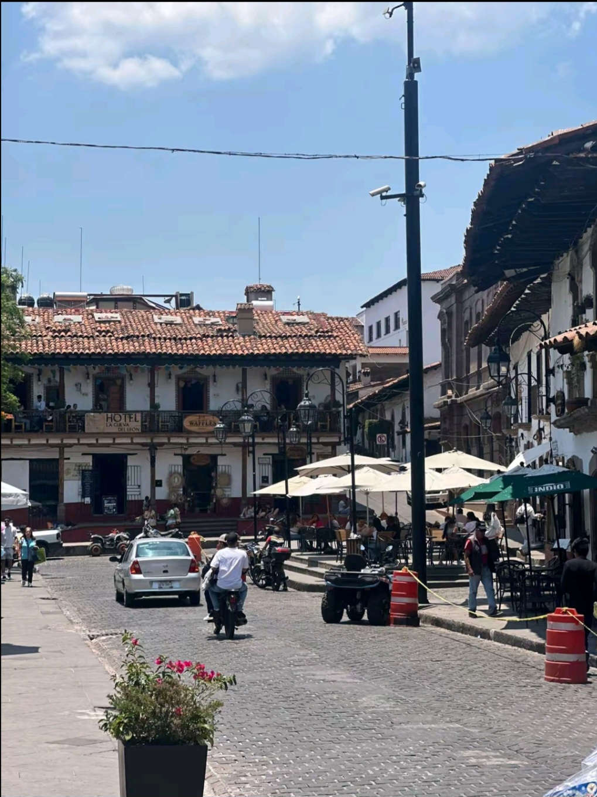
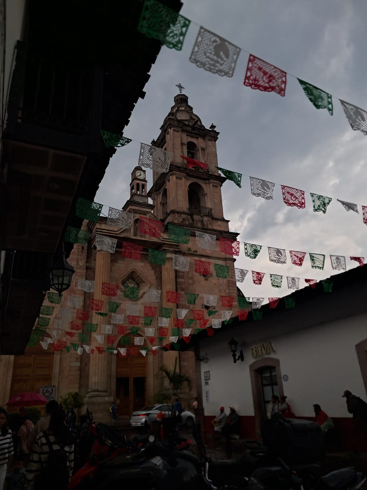
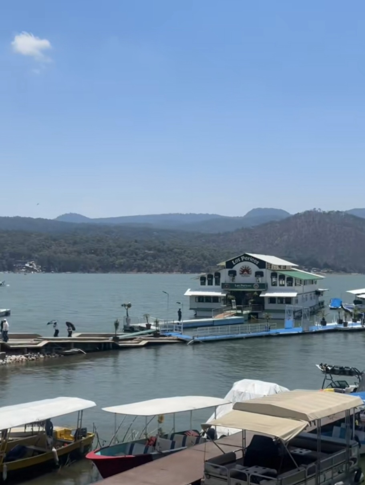

Un pedazito de nuestro municipio
Valle de Bravo, donde la naturaleza, la historia y la tradicion se unen para crear un lugar magico.

El Embarcadero
Es el Embarcadero Municipal, en la presa Miguel Alemán (lago de Valle de Bravo). El edificio flotante con el letrero "Los Pericos" es un restaurante sobre el agua, de los más conocidos del lugar."

Kiosco de Valle de Bravo
Se ve el centro de Valle de Bravo el cual se ve rodeado de gente del pueblo al igual que turistas en una de las zonas mas bonitas por su rapido acceso y ubicacion.

Iglesia central de Valle de Bravo
Muestra la catedral de el centro de Valle de Bravo la iglesia mas cercana del centro ya que se encuentra a un lado del kiosco y de la presidencia municipal por lo mismo es la mas recurrida y turistica.

Restaurante Pericos
Disfruta del lago en el restaurante los pericos que se encuentra en la laguna de valle de bravo en el embarcadero disfrutando tambien de su rica comida y vistas

Iglesia de Avandaro
Muestra la arquitectura típica del pueblo con sus tradiciones y creencias religiosas hacia sus santos como la virgen de Guadalupe

Cerro Colorado
Se muestra el bosque de Cerro Colorado con sus caminos para senderismo y tambien para dar ciclismo la mayoria se usa para ir a rutas de ciclismo